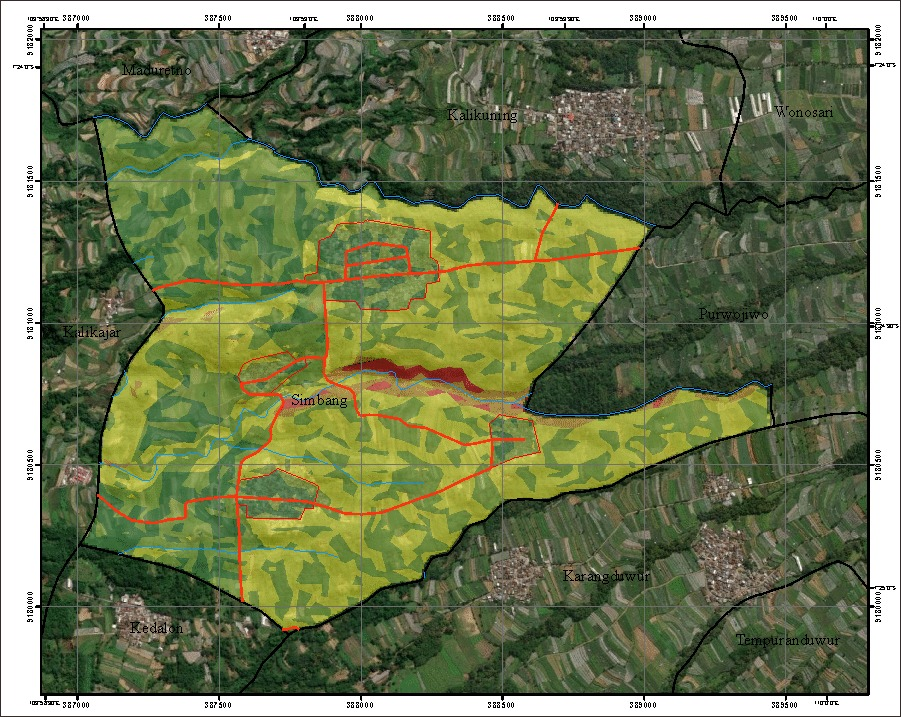
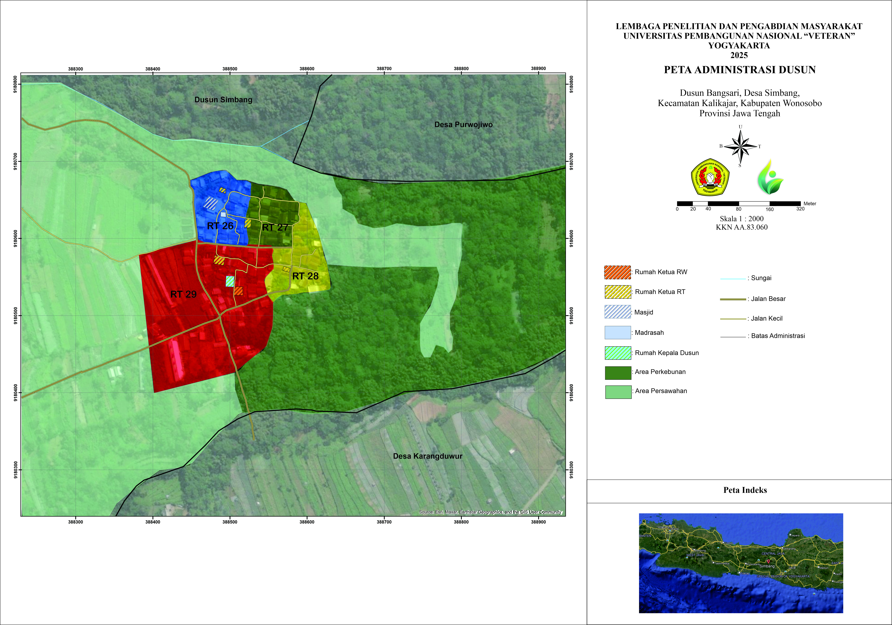

Pemetaan wilayah dan analisis kerawanan bencana Dusun Bangsari
Peta-peta berikut dibuat oleh tim KKN UPN "Veteran" Yogyakarta tahun 2025 untuk membantu analisis wilayah dan mitigasi bencana di Dusun Bangsari

Peta ini menunjukkan tingkat kerawanan tanah longsor di wilayah Desa Simbang, khususnya Dusun Bangsari. Peta dibuat berdasarkan analisis kemiringan lereng, jenis tanah, curah hujan, dan kondisi geologi setempat.

Peta administrasi ini menampilkan pembagian wilayah RT (Rukun Tetangga) di Dusun Bangsari serta lokasi fasilitas penting seperti masjid, madrasah, dan rumah para perangkat dusun.
Peta kerawanan longsor membantu warga memahami risiko dan melakukan tindakan pencegahan yang tepat.
Peta administrasi memudahkan identifikasi lokasi dan struktur organisasi wilayah dusun.